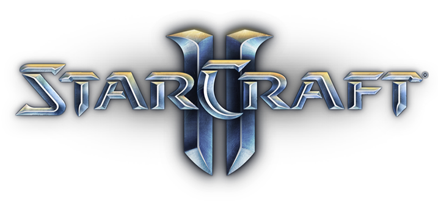
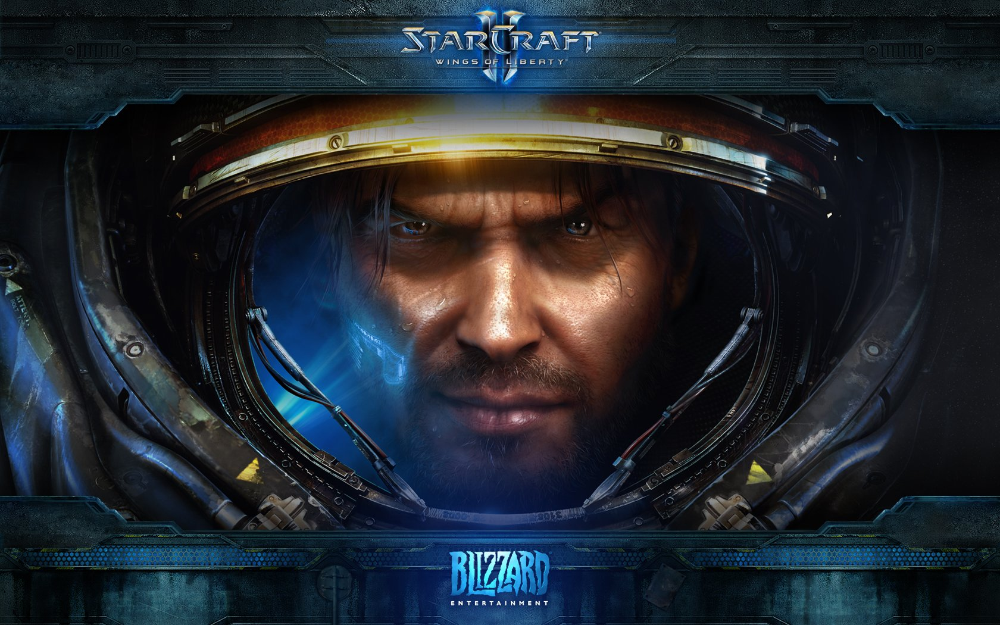
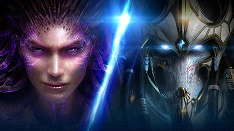
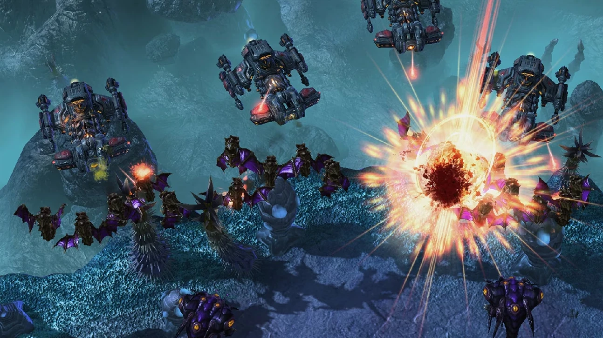
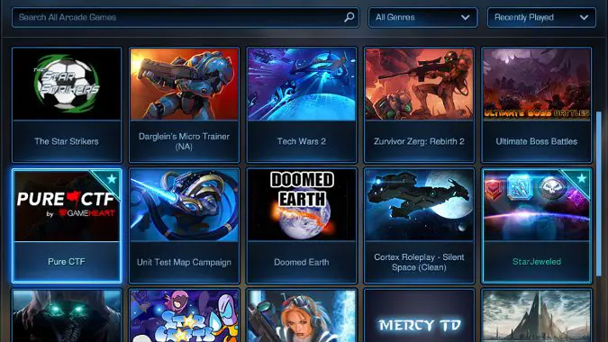
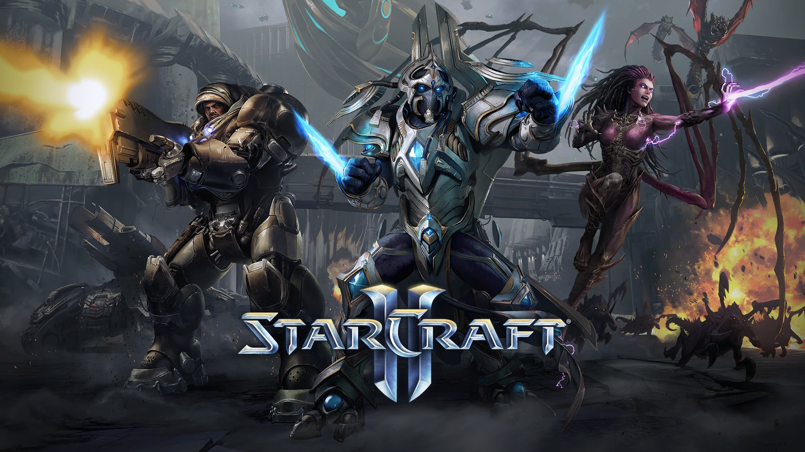

StarCraft II: Wings of Liberty
El rey de la estrategia en tiempo real de ciencia ficción. Lidera a los Terran en el sector Koprulu.

Heart of the Swarm & Legacy of the Void
Controla la implacable colmena Zerg y unifica a los honorables ancestros Protoss.

Estrategia Competitiva Global
Pon a prueba tus reflejos y tu gestión macroeconómica en la jerarquía clasificatoria más exigente.

Misiones Cooperativas
Une fuerzas con un amigo y domina el campo de batalla controlando a comandantes emblemáticos.

Modo Arcade Totalmente Libre
Explora miles de juegos y mapas personalizados creados en su totalidad por la comunidad.

Gráficos Completamente Tridimensionales
Batallas masivas en tiempo real optimizadas con deslumbrantes efectos de física y partículas.

¡INGRESA AL SECTOR KOPRULU YA!
Libra una guerra galáctica sin cuartel. Toma el control de tres facciones completamente únicas y lucha por la supremacía del universo en el juego de estrategia competitivo por excelencia.
Reseñas generales: Extremadamente positivas
Fecha de lanzamiento: 27 Jul, 2010
Desarrollador / Editor: Blizzard Entertainment
Acerca de este juego
StarCraft II es un título de estrategia en tiempo real donde construyes ejércitos, recolectas recursos valiosos como el mineral y el gas vespeno, y superas tácticamente a tus rivales. Su galardonada campaña te sumerge de lleno en intrigas políticas, batallas interplanetarias y conflictos ancestrales que decidirán el destino definitivo de toda la galaxia.
Las Tres Grandes Facciones
Domina las mecánicas distintivas de cada especie. Los versátiles Terran confían en su tecnología militar avanzada, los letales Zerg abruman con su evolución orgánica masiva y los tecnológicamente superiores Protoss canalizan escudos de plasma y poderes psiónicos devastadores.
Elige tu raza:

El Pináculo de los Esports
Considerado uno de los deportes electrónicos más exigentes y equilibrados del mundo. Su robusto sistema de emparejamiento te asignará oponentes de tu mismo nivel de habilidad, permitiéndote escalar desde la liga de Bronce hasta convertirte en un Gran Maestro del Sector Koprulu.
Requisitos del Sistema
Mínimos:
- SO: Windows 7 / 8 / 10 (64-bit)
- CPU: Intel Core i3 / AMD FX-4300
- RAM: 4 GB
- GPU: GeForce GTX 650 / Radeon HD 7790
- Espacio: 30 GB
Recomendados:
- SO: Windows 10 / 11 (64-bit)
- CPU: Intel Core i5 / AMD Ryzen 5
- RAM: 8 GB
- GPU: GeForce GTX 660 / Radeon R9 270X
- Espacio: 30 GB
Detalles adicionales
Género: Estrategia en Tiempo Real (RTS), Ciencia Ficción
Multijugador: Sí (1v1, Co-op, 2v2, 3v3, 4v4, Arcade)
Soporte técnico: support.blizzard.com